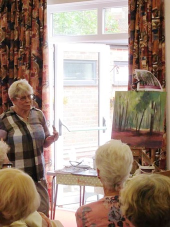
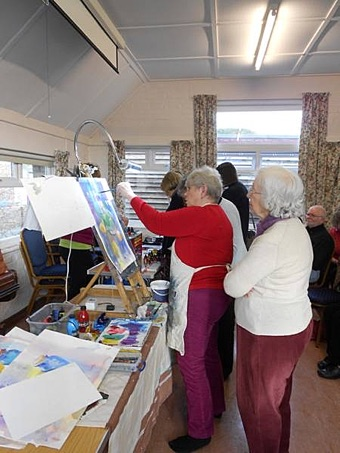
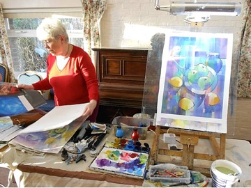
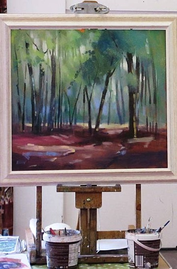
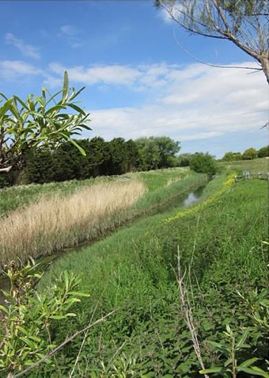
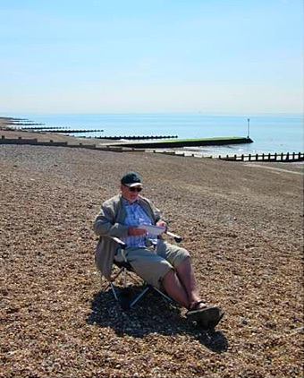
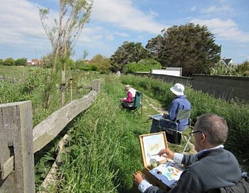
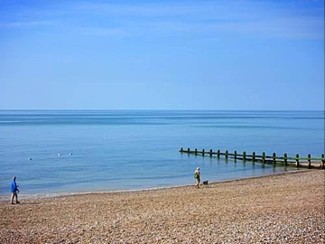

New members are always highly welcome, and if you decide to join Arun Art Society you won't be disappointed. We are a society with more than 50 year's history, with a thriving, friendly, and active member base. We currently have about 50 members. Our president, Liz Seward, is a highly accomplished artist. She is well known as a tutor and writer.
Current annual Arun Art Society membership fees are: £35
Membership is by selection. If you would like to join our society or find out more about us, please contact:
Mrs Judith Armstrong
Tel: 01903 773907
For information about our meetings programme, exhibitions, and members' work, please see the other pages on this website.
Please note that visitors are very welcome at all of our Saturday afternoon art demonstration meetings, for a small fee of £4.
Photos from our meetings
Liz Seward art demonstrations




Painting trips to local locations



